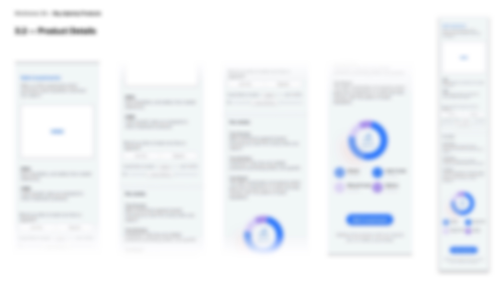
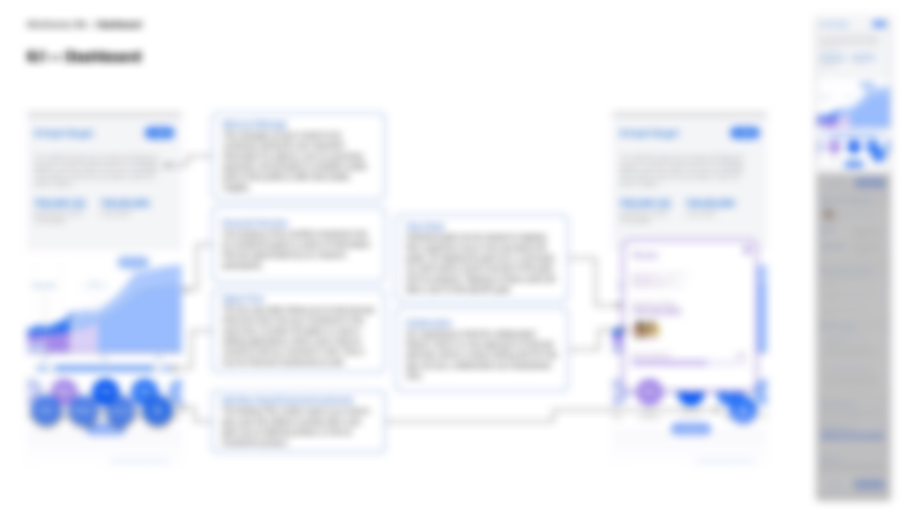

Accessible Financial Planning
Overview
Conducted user research and market analysis for a fintech startup to revamp their investment app, creating wireframes and design recommendations to enhance usability and accessibility for investors of all levels. This process included a thorough research phase, iterative wireframing and delivering a cohesive set of screens.
Role
Researcher and Designer
For
Quicksand


NDA Project–Please get in touch to learn more!